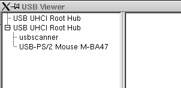
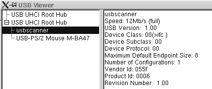
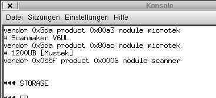
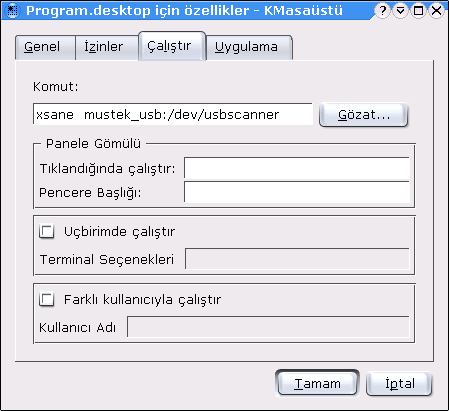

| ||||||
$ rpm -qa|grep sane xsane-0.84-2 sane-frontends-1.0.7-2 sane-backends-1.0.7-6
$ rpm -qa|grep usbview usbview-1.0-5


VendorID = 055f ProductID = 0006
VendorID = 0x055f ProductID = 0x0006
modprobe scanner vendor=xxxx product=xxxx
# modprobe scanner vendor=0x055f product=0x0006
cat /proc/bus/usb/drivers
# cat /proc/bus/usb/usb/drivers
usbdevfs
hub
hid
48- 63: usbscanner
# cd /etc/sane.d
# ls -a . canon.conf hp.conf net.conf snapscan.conf .. coolscan.conf m3096g.conf pie.conf sp15c.conf abaton.conf dc210.conf microtek2.conf plustek.conf st400.conf agfafocus.conf dc240.conf microtek.conf qcam.conf tamarack.conf apple.conf dc25.conf mustek.conf ricoh.conf umax1220u.conf artec.conf dll.conf mustek_pp.conf s9036.conf umax.conf avision.conf dmc.conf mustek_usb.conf saned.conf umax_pp.conf bh.conf epson.conf nec.conf sharp.conf v4l.conf
# mustek_usb.conf: Configuration file for Mustek USB scanner # Read man sane-mustek_usb for documentation # If USB errors occur, using this option may help #option max_block_size 1024 # Autodetect 1200 UB and Trust Compact Scan USB 19200 usb 0x055f 0x0006 # Autodetect 1200 USB (not supported) # usb 0x055f 0x0003 # Autodetect 1200 CU usb 0x055f 0x0001 # Autodetect 1200 CU Plus usb 0x055f 0x0008 # Autodetect 600 CU usb 0x055f 0x0002 # Autodetect 600 USB (not supported) usb 0x055f 0x0873 # If autodetection doesn't work uncomment or add your device file and one # suitable option (1200ub is also for Trust Compact Scan USB 19200). #/dev/usb/scanner0 #option 1200ub #option 1200cu #option 1200cu_plus #option 600cu #/dev/usbscanner0 #option 1200ub #option 1200cu #option 1200cu_plus #option 600cu
usb 0x055f 0x0006 /dev/usbscanner option 1200ub
scanimage mustek_usb:/dev/usbscanner --format tiff > test.tiff
options scanner vendor=0x055f options scanner product=0x0006
modprobe scanner
# 1200UB [Mustek] vendor 0x055f product 0x0006 module scanner


| |||||||||